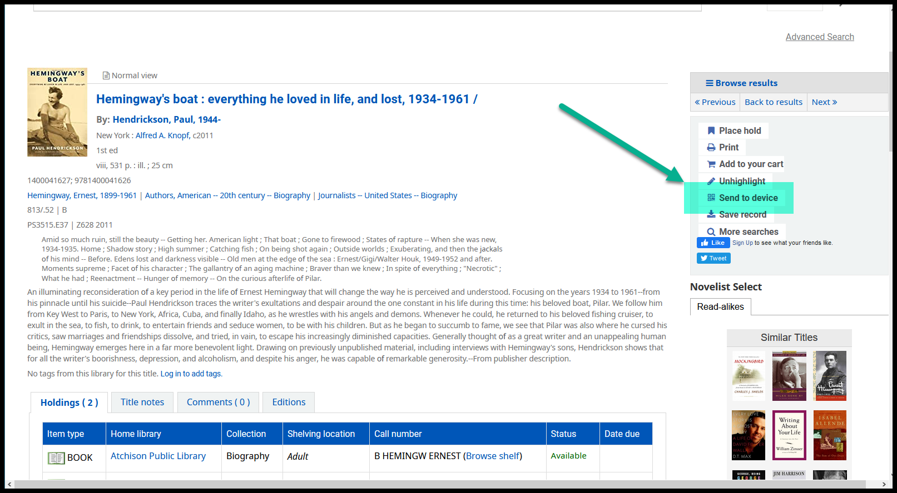
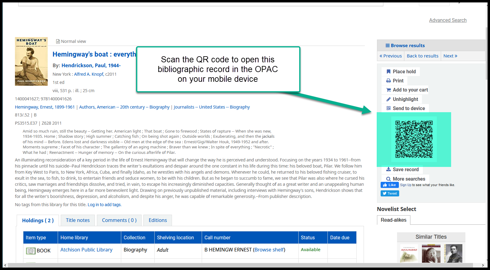
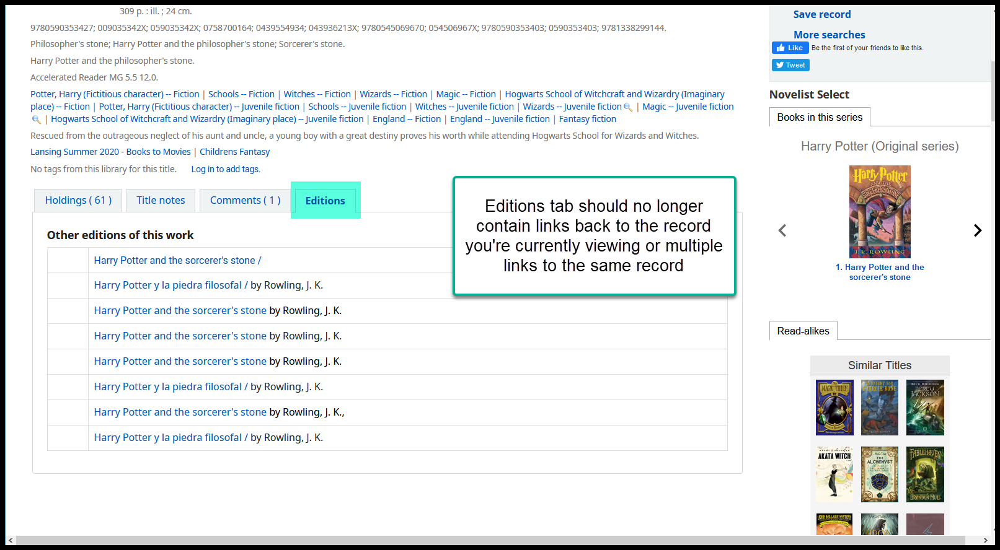

Other OPAC changes¶
Locate on device¶
On a title’s details page in the OPAC, you can click on a new button called “Send to device” that will generate a QR code for the title’s page in the OPAC. You can then scan the code with your phone and the record will open on your phone’s browser.


Editions problem fixed¶
The OPAC uses the ISBN numbers for an item and a FRBRization service to add links to different editions of the same work to the “Editions” tab in the OPAC. In the past, if a title had multiple ISBNs on the same title, the editions were grouped by ISBN, causing an title to show up on its own “Editions” tab. The titles are now configured to group on biblionumber, so fewer titles should appear on the “Editions” tab and none of them should refer back to the title you are currently looking at.
